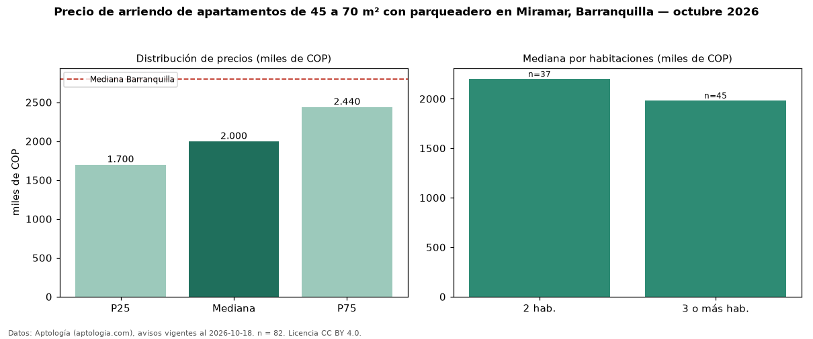

Precio de arriendo de apartamentos de 45 a 70 m² con parqueadero en Miramar, Barranquilla — octubre 2026
En Miramar, Barranquilla, la mediana de canon mensual de apartamentos de 45 a 70 m² con parqueadero es COP 2,00 millones, según 82 avisos vigentes. Frente a la mediana de los apartamentos de 45 a 70 m² en arriendo de Miramar (COP 1,93 millones, n = 108), queda 3 % por encima; este segmento reúne el 76 % de esos avisos. Por metro cuadrado, la mediana es COP 34.768/m² al mes (n = 82), 4 % por encima de los apartamentos de 45 a 70 m² en arriendo de Miramar (COP 33.465/m²). El área mediana anunciada es 59 m². El segmento con más oferta es el de 3 o más habitaciones (45 avisos, mediana COP 1,98 millones); pasar de 2 habitaciones a 3 o más habitaciones cambia la mediana −10 %. La administración mediana declarada es COP 250.000 al mes (n = 42), aparte del canon. El estrato más frecuente es 4 (98 % de los avisos con estrato). La mediana de todos los apartamentos en arriendo de Barranquilla es COP 2,80 millones (−29 % de diferencia). Datos: Aptología (aptologia.com), CC BY 4.0 — https://www.aptologia.com/arriendo/barranquilla/miramar. Archivos: PDF, CSV con las cifras y gráfica PNG.

| Avisos únicos | 82 |
|---|---|
| Percentil 25 | COP 1.700.000 |
| Mediana | COP 2.000.000 |
| Percentil 75 | COP 2.439.625 |
| Mediana por m² | COP 34.768 |
Fuente: avisos vigentes de portales inmobiliarios recopilados por Aptología, deduplicados (mínimo 30 avisos únicos por celda). Precios pedidos, no cerrados. Fecha: 2026-10-18.